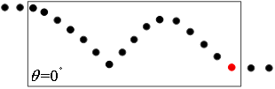

在3D测量中，往往需要对轮廓数据中两个检测区域内的特征点进行定位，并对这两个特征点之间的尺寸信息进行测量，图1所示为两个检测区域内Z最大特征点之间的欧式距离信息。
| 参数名称 | 参数描述 |
|---|---|
| 定位跟随 | 是：数据链显示二维线性变换参数； 否：数据链不显示二维线性变换参数； |
| 位置1特征点 模式 | 获取位置1的特征点方式，固定值，检测，引用三种 |
| 位置1特征点 | 位置1的特征点数值（固定值时显示可修改） |
| 位置1 ROI类型 | 第1个检测区域，分为3种：整幅图像、矩形、仿射矩形。 |
| 位置1 矩形ROI | |
| 位置1 仿射矩形ROI | |
| 位置1 特征类型 | 轮廓数据的特征大类型，分为5种：一般特征点、线段特征点、方向特征点、边沿特征点、拐点特征点。 |
| 位置1 一般特征 | 特征类型为一般特征点时该参数有效，分为6种：Z最大、Z最小、X最大、X最小、均值、中值。 |
| 位置1 线段特征 | 特征类型为线段特征点时该参数有效，分为4种：线段正向、线段反向、左垂直、右垂直。 |
| 位置1 方向 | 特征类型为方向特征点时该参数有效，取值范围[-180, 180]，单位：角度。 |
| 位置1 边沿特征 | 特征类型为边沿特征点时该参数有效，分为3种：上升沿、下降沿、任意。 |
| 位置1 拐点特征 | 特征类型为拐点特征点时该参数有效，分为3种：峰拐点、谷拐点、任意。 |
| 位置1 最高点个数 | 当鲁棒性最高点生效时，显示 |
| 位置1 邻域半径 | 当所有最高点模式生效时，设置搜索点的邻域半径 |
| 位置1 高度阈值 | 当所有最高点模式生效时，设置搜索点的邻域半径内的高度阈值 |
| 位置1 搜索模式 | 当Z方向稳定最高点生效时，设置搜索点的数量或者比例模式 |
| 位置1 搜索个数 | 当Z方向稳定最高点生效时，设置搜索点的数量 |
| 位置1 搜索比例 | 当Z方向稳定最高点生效时，设置搜索点的比例 |
| 位置1 期望方位 | 统计阈值最高点生效时，期望搜索点位的方向 |
| 位置1 点数阈值 | 统计阈值最高点生效时，邻域半径、高度阈值内定数的阈值 |
| 位置1 拟合半径 | 当拟合最高点生效时，设置拟合半径 |
| 位置1 拟合阈值 | 当拟合最高点生效时，设置拟合高度方向的拟合阈值 |
| 位置1 重新拟合 | 当拟合最高点生效时，是都对所有的点进行重新拟合 |
| 位置1 局外点比例 | 当拟合最高点生效时，设置不参与拟合的比例 |
| 位置1 显示候选点 | 图像中显示出位置1的候选点 |
| 位置1 锐度阈值类型 | 分为两种：绝对锐度阈值和相对锐度阈值。 |
| 位置1 相对锐度阈值 | 特征类型为拐点特征点时该参数有效，锐度阈值的百分比，即相对锐度阈值=绝对锐度阈值/锐度值最大值。 |
| 位置1 绝对锐度阈值 | 特征类型为拐点特征点时该参数有效，待检测拐点锐度值的绝对值需大于锐度阈值，否则该拐点将检测不到。 |
| 位置1 方向特征 | |
| 位置1 滤波半宽 | 特征类型为边沿特征点、拐点特征点时该参数有效，用于滤除噪声。 |
| 位置1 排序准则 | 特征类型为拐点特征点时该参数有效，分为3种：从左到右、从右到左、幅值，根据所选的准则对检测到的拐点进行排序。 |
| 位置1 拐点索引 | 特征类型为拐点特征点时该参数有效，索引设置的范围为[0, CornerNum-1]，CornerNum为有效拐点数量。 |
| 位置2 特征点 模式 | 获取位置2的特征点方式，固定值，检测，引用三种 |
| 位置2 特征点 | 位置2的特征点数值（固定值时显示可修改） |
| 位置2 ROI类型 | 第2个检测区域，分为3种：整幅图像、矩形、仿射矩形。 |
| 位置2 矩形ROI | |
| 位置2 仿射矩形ROI | |
| 位置2 特征类型 | 轮廓数据的特征大类型，分为5种：一般特征点、线段特征点、方向特征点、边沿特征点、拐点特征点。 |
| 位置2 一般特征 | 特征类型为一般特征点时该参数有效，分为6种：Z最大、Z最小、X最大、X最小、均值、中值。 |
| 位置2 线段特征 | 特征类型为线段特征点时该参数有效，分为4种：线段正向、线段反向、左垂直、右垂直。 |
| 位置2 方向 | 特征类型为方向特征点时该参数有效，取值范围[-180, 180]，单位：角度。 |
| 位置2 边沿特征 | 特征类型为边沿特征点时该参数有效，分为3种：上升沿、下降沿、任意。 |
| 位置2 拐点特征 | 特征类型为拐点特征点时该参数有效，分为3种：峰拐点、谷拐点、任意。 |
| 位置2 最高点个数 | 当鲁棒性最高点生效时，显示 |
| 位置2 邻域半径 | 当所有最高点模式生效时，设置搜索点的邻域半径 |
| 位置2 高度阈值 | 当所有最高点模式生效时，设置搜索点的邻域半径内的高度阈值 |
| 位置2 搜索模式 | 当Z方向稳定最高点生效时，设置搜索点的数量或者比例模式 |
| 位置2 搜索个数 | 当Z方向稳定最高点生效时，设置搜索点的数量 |
| 位置2 搜索比例 | 当Z方向稳定最高点生效时，设置搜索点的比例 |
| 位置2 期望方位 | 统计阈值最高点生效时，期望搜索点位的方向 |
| 位置2 点数阈值 | 统计阈值最高点生效时，邻域半径、高度阈值内定数的阈值 |
| 位置2 拟合半径 | 当拟合最高点生效时，设置拟合半径 |
| 位置2 拟合高度阈值 | 当拟合最高点生效时，设置拟合高度方向的拟合阈值 |
| 位置2 重新拟合 | 当拟合最高点生效时，是都对所有的点进行重新拟合 |
| 位置2 局外点比例 | 当拟合最高点生效时，设置不参与拟合的比例 |
| 位置2 显示候选点 | 图像中显示出位置2的候选点 |
| 位置2 锐度阈值类型 | 分为两种：绝对锐度阈值和相对锐度阈值。 |
| 位置2 相对锐度阈值 | 特征类型为拐点特征点时该参数有效，锐度阈值的百分比，即相对锐度阈值=绝对锐度阈值/锐度值最大值。 |
| 位置2 绝对锐度阈值 | 特征类型为拐点特征点时该参数有效，待检测拐点锐度值的绝对值需大于锐度阈值，否则该拐点将检测不到。 |
| 位置2 方向特征 | |
| 位置2 滤波半宽 | 特征类型为边沿特征点、拐点特征点时该参数有效，用于滤除噪声。 |
| 位置2 排序准则 | 特征类型为拐点特征点时该参数有效，分为3种：从左到右、从右到左、幅值，根据所选的准则对检测到的拐点进行排序。 |
| 位置2 拐点索引 | 特征类型为拐点特征点时该参数有效，索引设置的范围为[0, CornerNum-1]，CornerNum为有效拐点数量。 |
| 尺寸特征类型 | 轮廓数据的尺寸类型，以便计算两个特征点的距离或中点，分为4种：宽度、高度、欧氏距离、中点。 |
| 补偿系数 | 对结果数值进行比例补偿 |
| 固定补偿 | 对结果数值进行一个固定数值的补偿 |
| 判定条件 | 输入对尺寸结果、中点位置的判定条件 |
| 输入轮廓数据 | 显示待检测的轮廓图像。 |
| 位置1 特征点GUI | |
| 位置1 候选点GUI | |
| 位置1 拟合抛物线GUI | |
| 位置1 线段模式GUI | |
| 位置2 特征点GUI | |
| 位置2 候选点GUI | |
| 位置2 拟合抛物线GUI | |
| 位置2 线段模式GUI | |
| 输入轮廓数据 | 获取待检测的轮廓图像。 |
| 输入二维线性变换 | 用于进行定位跟随 |
| 参数名称 | 参数描述 |
|---|---|
| 输入轮廓数据 | 输入待检测的轮廓图像的轮廓数据，包括轮廓点数，有效点数、X方向和Z方向的最大值和最小值，以及反映图像空间和物理空间映射关系的二维线性变换。 |
| 位置1 | 第1个检测区域内特征点的二维坐标信息。 |
| 位置2 | 第2个检测区域内特征点的二维坐标信息。 |
| 尺寸结果 | 两个特征点间的宽度/高度/欧氏距离/中点。 |
| 执行结果 | 工具执行结果。 |
| 执行时间 | 工具执行时间。 |
Step 1 设置位置1特征点模式，选择“引用”，需要用数据链连接二维坐标；选择“检测”，需要执行Step 2-3步骤；选择“固定值”，通过GUI或者编辑框设置固定点；
Step 2 位置1设置检测区域和轮廓数据特征大类型：为了获取轮廓数据特征点的二维坐标信息，需要设置检测区域和轮廓数据的特征大类型。其中，检测区域分为3种：整幅图像、矩形和仿射矩形，而轮廓数据的大特征类型分为5种：一般特征点，线段特征点，方向特征点，边沿特征点和拐点特征点。
Step 3 设置轮廓数据的具体特征类型及参数：根据Step1设置的特征大类型，需对不同特征大类型下的具体特征类型及其相关的参数进行设定。
特征大类型为一般特征点时，需要对一般特征点的具体特征类型进行设置。其中，具体特征类型分为6种：Z最大、Z最小、X最大、X最小、均值、中值、。
Z最大值：检测区域内所有轮廓数据（X,Z）中Z坐标最大所对应的轮廓数据的坐标信息。
Z最小值：检测区域内所有轮廓数据（X,Z）中Z坐标最小所对应的轮廓数据的坐标信息。
X最大值：检测区域内所有轮廓数据（X,Z）中X坐标最大所对应的轮廓数据的坐标信息。
X最小值：检测区域内所有轮廓数据（X,Z）中X坐标最小所对应的轮廓数据的坐标信息。
均值：检测区域内所有轮廓数据（X,Z）的均值。
中值：检测区域内所有轮廓数据（X,Z）的中值。
特征大类型为线段特征点时，需要对线段特征点的具体特征类型以及线段参数进行设置。其中，线段特征点的具体特征类型分为4种：线段正向、线段反向、左垂直、右垂直。而线段参数的设置是通过Edit视图中的线段ROI来进行的。
特征大类型为方向特征点时，需要对方向信息进行设置。方向信息采用角度方式进行输入。

特征大类型为边沿特征点时，需要对边沿特征点的具体类型、相对锐度阈值进行设置。其中，边沿特征点的具体类型分为3种：上升沿、下降沿、任意。相对锐度阈值设置参考拐点特征点的相对锐度阈值。
上升沿：检测区域内所有轮廓数据的上升边缘中二阶微分为0的点，如图4(a)中的空心红点所示。
下降沿：检测区域内所有轮廓数据的下降边缘中二阶微分为0的点，如图4(b)中的空心红点所示。
任意沿：检测区域内所有轮廓数据的上升沿或者下降沿特征点。
特征大类型为拐点特征点时，需要对拐点特征点的具体类型、相对锐度阈值和索引进行设置。其中拐点特征点的具体类型分为3种：峰拐点、谷拐点、任意；索引设置的范围为[0, CornerNum-1]，CornerNum为有效拐点数量。锐度阈值设置的基本原则为：待检测拐点锐度值的绝对值需大于锐度阈值，否则该拐点将检测不到。
拐点：检测区域内所有轮廓数据中斜率发生改变的点，如图5(a)中的实心红点所示。
峰拐点：检测区域内所有轮廓数据的所有拐点中向上凸的拐点，如图5(b)中的实心红点所示。
谷拐点：检测区域内所有轮廓数据的所有拐点中向下凹的拐点，如图5©中的实心红点所示。
Step 4 设置位置2特征点模式，选择“引用”，需要用数据链连接二维坐标；选择“检测”，需要执行Step 2-3步骤；选择“固定值”，通过GUI或者编辑框设置固定点；
Step 5 设置轮廓数据尺寸类型：为了获取轮廓数据特征点之间的距离或者中点坐标信息，需要设置轮廓数据的尺寸类型。轮廓数据的尺寸类型分为4种：宽度、高度、欧氏距离、中点。
Step 6 执行测量和输出结果：在设置好检测区域，轮廓数据特征大类型，具体特征类型及参数，和轮廓数据尺寸类型之后，就可以执行测量了。输出的结果包括，两个特征点的二维坐标信息，两个特征点之间的尺寸信息或者其中点坐标信息。
参见“\Samples\3D\深度图\轮廓位置尺寸测量工具.gvp”。